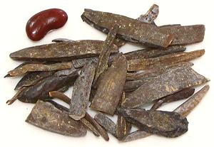

This large bean tree is native to West Africa from Senegal east to Central African Republic and south to Angola. The pods of this tree are up to 19 inches long and contain 6 to 10 glossy seeds up to 2-3/4 inches long. They are sufficiently toxic to be used as arrow poison and to poison fish. An edible oil can be extracted from the seeds, but it is mostly used to make soap and candles. Various parts of the tree are used medicinally.
The seeds are most eaten in Nigeria. said to provide a meaty taste. To make the toxic seeds edible, they are boiled up to 12 hours, then shelled. The cotyledons are sliced thin, then boiled for about 2 hours and soaked in water for 10 hours. They are then wrapped in banana leaves and fermented 4 to 6 days to use as a snack or side dish, 7 to 10 days to use as a condiment in soup. Photo by Scamperdale distributed under license Creative Commons Attribution-NonCommercial 2.0 Generic.
More on Beans, Peas and Lentils.

Buying: Oil bean in the form of fermented, ready to use
Ugba slices is available on-line in North America. The photo specimens
were purchased for 2018 US $4.25 per ounce plus shipping.